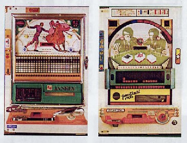

東京マージャンマガジンの発行者、塔四郎さんから「雀牌趣味・第３号」という冊子が送られてきた。ページ数10ページほどの薄いパンフレットである。表紙には、「麻雀意匠愛好家協会 編」とある。
（なんだ、これは、....おかしな本だな....）と思いながら紐といた。すると表紙の見返しに、「雀牌趣味トハ、ナンゾヤ？」というタイトルとともに、この冊子の作成意図が述べられていた。
それによると、作成者である田端宏章という人は、麻雀は知らないけども、麻雀牌のデザインに強く惹かれているのだという。そこで麻雀牌をあしらったグッズや関連商品を取り上げた冊子を発行しているのだという。
（ふ〜ん、世の中には変わった人がいるもんだ）と思いつつ読みすすんだ。すると第３号の特集は「雀球」であった。おもわず「おお、これは懐かしい！」。
これでは遠目でわかりにくいんでアップにすると、この通り。

もっとどアップすると、こんな感じ。
見た通り、パチンコ形式の麻雀もどきゲーム。球をはじくと盤面を転がったあと、真ん中辺にある青色のどこかのマス目に入る。麻雀牌は34種類、そこで索子を除いた25種類を25列に納めている。そこでサンシキは絶対に出来ない。(^-^；
各列は４段になっているが、この４段はすべて同じ牌。たとえば一番左の１列４枚は、すべて 。そこで球が一番左の列に入賞すれば、機械仕掛けでがクルッと１枚表向く。 。そこで球が一番左の列に入賞すれば、機械仕掛けでがクルッと１枚表向く。 の列なら、もちろんが表向く。もし２回の列に入賞すれば、が２枚表向くことになる。するとの対子ができる。 の列なら、もちろんが表向く。もし２回の列に入賞すれば、が２枚表向くことになる。するとの対子ができる。
どのマス目が何牌かは分かっているから、それを狙って球をはじく。そうやてアガリ役を作って行く。もちろん途中の釘にジャマされて、なかなか思うところにはゆかない。
それでも大物を完成させると、結構たくさんのの球がでる。その他にも、マス目に入る前に盤面のポケットに入球すれば、10個ほどの球が出る。
この機械仕掛けは趣きがあって好きだったが、やがてデジタル式が登場した。
デジタル式は、手牌がウインドに表示される。同じマス目に入球しても、牌をウインドに表示するだけなので、マス目は25列１段あればいい。見た目もずっとシンプルである。やがてこのウインドも大きくなり、他のパチンコ台のように、ウインドが中央にあるタイプが登場した。
ウインドが下段にあるタイプは、普通のパチンコと同じように途中の穴に入賞することも趣向の一つとしている。つまりパチンコと麻雀の合体タイプ。しかしこの最新式では、途中の穴など、どうでもいい。さっさと滑落して、どこかのマス目に入球することが目的。
もちろんまったく釘が無いのでは、ハンドルさばき一つで、自由自在に入球されてしまうので、それを散らす程度の釘は配置されている。こうなると、なんだかテレビゲームに近い感じ。
しかしパチンコは、球が盤面を飛び跳ねながら入賞するかどうかのスリルが面白さの一つ。σ(-_-)はどうも味けなく感じる。
いずれにせよ、いまでは機械式はもちろん、デジタル式もさっぱり見かけなくなったが、一時はかなり流行った。しかし雀牌趣味によると、日本のあちこちに、まだこの機械を設置してあるパチンコ店が何軒もあるという。うん、エライゾ、その店。そのうち、いつか行くからね。
|